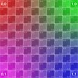

<!doctype html>
<style>
  #container {
    width: 100%;
    height: 100%;
    background-color: bisque;
    display: flex;
    flex-direction: column;
    justify-content: center;
    align-items: center;
    color: red;
    font-family: monospace;
  }
  canvas {
    margin-left: 10px;
  }
</style>
<svg xmlns="http://www.w3.org/2000/svg" width=128 height=128>
  <foreignObject width=128 height=128>
    <div id="container">
      Ohai DOM!
      
    </div>
  </foreignObject>
</svg>

<canvas width=128 height=128></canvas>
<script type="module">
const svg = document.querySelector('svg');
Array.from(document.querySelectorAll('style'))
  .forEach(styleTag => {
    svg.appendChild(styleTag.cloneNode(true));
  })
const s = new XMLSerializer().serializeToString(svg);
const datauri = 'data:image/svg+xml;base64,' + btoa(s);
const img = document.createElement('img');
img.src = datauri;
img.onload = _ => {
  const c = document.querySelector('canvas');
  const ctx = c.getContext('2d');
  ctx.drawImage(img, 0, 0);
}
</script>
